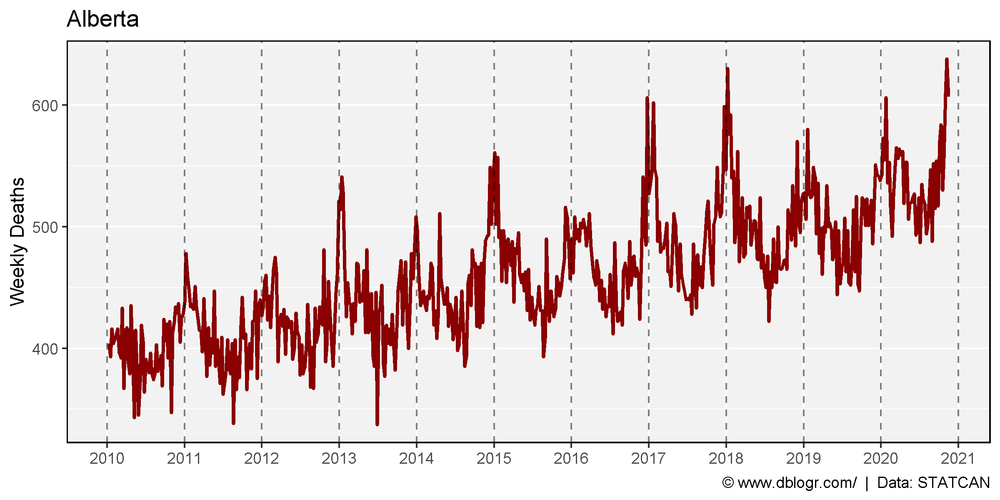

Prepare Data
# devtools::install_github("derekmichaelwright/agData")
library(agData) # Loads: tidyverse, ggpubr, ggbeeswarm, ggrepel
# Prep data
areas <- c("Canada", "Quebec", "Ontario", "British Columbia",
"Alberta", "Saskatchewan", "Manitoba", "Nova Scotia",
"Newfoundland and Labrador", "New Brunswick", "Prince Edward Island",
"Northwest Territories", "Yukon", "Nunavut")
#
# Recent data is incomplete
cutoffName <- "Nov14"
cutoffDate <- "2020-12-31"
cutoffJD <- lubridate::yday(cutoffDate)
#
pp <- agData_STATCAN_Population %>%
filter(Month ==1) %>% select(Area, Year, Population=Value)
# d1 = Deaths per Week
d1 <- read.csv("1310078301_databaseLoadingData.csv") %>%
rename(Date=1, Area=GEO, Value=VALUE) %>%
mutate(Date = as.Date(Date),
Year = as.numeric(substr(Date, 1, 4)),
Month = as.factor(substr(Date, 6, 7)),
YearGroup = ifelse(Year < "2020", "pre-2020", Year),
YearGroup = factor(YearGroup, levels = c("pre-2020", "2020")),
JulianDay = lubridate::yday(Date),
Area = gsub(", place of occurrence", "", Area),
Area = factor(Area, levels = areas))
# d2 = Deaths per Week, by gender and age
d2 <- read.csv("1310076801_databaseLoadingData.csv") %>%
rename(Date=1, Age=Age.at.time.of.death, Value=VALUE, Area=GEO) %>%
mutate(Date = as.Date(Date),
Age = gsub("Age at time of death, ", "", Age),
Year = as.numeric(substr(Date, 1, 4)),
Month = as.factor(substr(Date, 6, 7)),
YearGroup = ifelse(Year < "2020", "pre-2020", Year),
YearGroup = factor(YearGroup, levels = c("pre-2020", "2020")),
JulianDay = lubridate::yday(Date),
Area = gsub(", place of occurrence", "", Area),
Area = factor(Area, levels = areas))
# d3 = Yearly death rate
xx <- d1 %>% filter(Year == 2020) %>%
group_by(Area, Year) %>%
summarise(Value = sum(Value)) %>%
mutate(Month.of.death = "Total")
d3 <- read.csv("1310070801_databaseLoadingData.csv") %>%
rename(Year=1, Area=GEO, Value=VALUE, Unit=UOM) %>%
mutate(Month.of.death = gsub("Month of death, |, month of death", "", Month.of.death),
Area = gsub(", place of residence", "", Area),
Area = factor(Area, levels = areas)) %>%
filter(Unit == "Number") %>%
bind_rows(xx) %>%
left_join(pp, by = c("Area", "Year")) %>%
mutate(Death.Rate = 1000 * Value / Population) %>%
filter(!is.na(Death.Rate), Month.of.death == "Total") %>%
mutate(Group = ifelse(Year < 2020, "pre-2020", "post-2020"))
#
d1 <- d1 %>% filter(Date <= cutoffDate)
d2 <- d2 %>% filter(Date <= cutoffDate)
Deaths
# Create plotting function
deathPlot1 <- function(area = "Canada") {
# Prep data
vv <- as.Date(c("2010-01-01","2011-01-01","2012-01-01","2013-01-01",
"2014-01-01","2015-01-01","2016-01-01","2017-01-01",
"2018-01-01","2019-01-01","2020-01-01","2021-01-01"))
xx <- d1 %>% filter(Area == area)
# Plot
ggplot(xx, aes(x = Date, y = Value)) +
geom_line(size = 1, color = "darkred", alpha = 0.8) +
geom_vline(xintercept = vv, lty = 2, alpha = 0.5) +
scale_x_date(date_breaks = "1 year", date_labels = "%Y", minor_breaks = "1 year") +
theme_agData() +
labs(title = area, y = "Weekly Deaths", x = NULL,
caption = "\xa9 www.dblogr.com/ | Data: STATCAN")
}
Canada
mp <- deathPlot1("Canada")
ggsave("canada_deaths_1_01.png", mp, width = 8, height = 4)

Ontario
mp <- deathPlot1("Ontario")
ggsave("canada_deaths_1_02.png", mp, width = 8, height = 4)

Quebec
mp <- deathPlot1("Quebec")
ggsave("canada_deaths_1_03.png", mp, width = 8, height = 4)

British Columbia
mp <- deathPlot1("British Columbia")
ggsave("canada_deaths_1_04.png", mp, width = 8, height = 4)

Alberta
mp <- deathPlot1("Alberta")
ggsave("canada_deaths_1_05.png", mp, width = 8, height = 4)

Saskatchewan
mp <- deathPlot1("Saskatchewan")
ggsave("canada_deaths_1_06.png", mp, width = 8, height = 4)

Manitoba
mp <- deathPlot1("Manitoba")
ggsave("canada_deaths_1_07.png", mp, width = 8, height = 4)

Deaths Vs. Previous Years
# Create plotting function
deathPlot2 <- function(areas) {
# Prep data
xx <- d1 %>% filter(Area %in% areas)
# Plot
ggplot(xx, aes(x = JulianDay, y = Value, group = Year, color = YearGroup, alpha = YearGroup)) +
geom_line() +
facet_wrap(Area ~ ., scales = "free_y", ncol = 5) +
scale_color_manual(name = NULL, values = c("darkgreen","darkred")) +
scale_alpha_manual(name = NULL, values = c(0.5,1)) +
theme_agData(legend.position = "bottom") +
labs(y = "Deaths Per Week",
caption = "\xa9 www.dblogr.com/ | Data: STATCAN")
}
Canada
mp <- deathPlot2(areas = areas)
ggsave("canada_deaths_2_01.png", mp, width = 20, height = 8)

mp <- deathPlot2(areas = "Canada")
ggsave("canada_deaths_2_02.png", mp, width = 6, height = 4)

Ontario
mp <- deathPlot2(areas = "Ontario")
ggsave("canada_deaths_2_03.png", mp, width = 6, height = 4)

Quebec
mp <- deathPlot2(areas = "Quebec")
ggsave("canada_deaths_2_04.png", mp, width = 6, height = 4)

British Columbia
mp <- deathPlot2(areas = "British Columbia")
ggsave("canada_deaths_2_05.png", mp, width = 6, height = 4)

Alberta
mp <- deathPlot2(areas = "Alberta")
ggsave("canada_deaths_2_06.png", mp, width = 6, height = 4)

Saskatchewan
mp <- deathPlot2(areas = "Saskatchewan")
ggsave("canada_deaths_2_07.png", mp, width = 6, height = 4)

Deaths by Age Group
# Create plotting function
deathPlot3 <- function(areas = "Canada") {
# Prep data
xx <- d2 %>% filter(Area %in% areas, Sex == "Both sexes", Age != "all ages")
# Plot
ggplot(xx, aes(x = JulianDay, y = Value, group = Year, color = YearGroup, alpha = YearGroup)) +
geom_line() +
facet_grid(Area ~ Age, scales = "free_y",
labeller = label_wrap_gen(width = 10)) +
scale_color_manual(name = NULL, values = c("darkgreen","darkred")) +
scale_alpha_manual(name = NULL, values = c(0.3,1)) +
theme_agData(legend.position = "bottom") +
labs(y = "Deaths Per Week", x = "Julian Day",
caption = "\xa9 www.dblogr.com/ | Data: STATCAN")
}
Canada
mp <- deathPlot3(areas = "Canada")
ggsave("canada_deaths_3_01.png", mp, width = 8, height = 4)

Saskatchewan
mp <- deathPlot3(areas = "Saskatchewan")
ggsave("canada_deaths_3_02.png", mp, width = 8, height = 4)

Eastern Canada
areas <- c("Ontario", "Quebec", "Nova Scotia",
"Newfoundland and Labrador", "New Brunswick")
mp <- deathPlot3(areas = areas)
ggsave("canada_deaths_3_03.png", mp, width = 8, height = 8)

Western Canada
areas <- c("British Columbia", "Alberta", "Saskatchewan", "Manitoba")
mp <- deathPlot3(areas = areas)
ggsave("canada_deaths_3_04.png", mp, width = 8, height = 8)

Select Provinces
areas <- c("Ontario", "Quebec", "Saskatchewan",
"Alberta", "British Columbia")
mp <- deathPlot3(areas = areas)
ggsave("canada_deaths_3_05.png", mp, width = 8, height = 8)

Saskatchewan vs. Quebec and Ontario
areas <- c("Quebec", "Ontario", "Saskatchewan")
mp <- deathPlot3(areas = areas)
ggsave("canada_deaths_3_06.png", mp, width = 8, height = 5)

Alberta vs. Ontario
areas <- c("Ontario", "Alberta")
mp <- deathPlot3(areas = areas)
ggsave("canada_deaths_3_07.png", mp, width = 8, height = 5)

Deaths By Gender
Canada
# Prep data
xx <- d2 %>% filter(Area %in% "Canada", Sex != "Both sexes", Year == 2020)
# Plot
mp <- ggplot(xx, aes(x = JulianDay, y = Value, group = Sex, color = Sex)) +
geom_line() +
facet_grid(Area ~ Age) +
scale_color_manual(name = NULL, values = c("darkred","darkgreen")) +
scale_alpha_manual(name = NULL, values = c(0.5,1)) +
theme_agData(legend.position = "top") +
labs(y = "Deaths Per Week", x = "Julian Day",
caption = "\xa9 www.dblogr.com/ | Data: STATCAN")
ggsave("canada_deaths_4_01.png", mp, width = 8, height = 4)

Death Rate
Canada
# Plot
mp <- ggplot(d3 %>% filter(Area == "Canada"),
aes(x = Year, y = Death.Rate, fill = Group)) +
geom_bar(stat = "identity", color = "black", ) +
scale_fill_manual(values = c(alpha("darkred",0.5), "darkred")) +
scale_x_continuous(breaks = seq(1990, 2020, 5)) +
theme_agData(legend.position = "none") +
labs(title = "Death Rate - Canada", y = "Deaths Per Thousand People", x = NULL,
caption = "\xa9 www.dblogr.com/ | Data: STATCAN")
ggsave("canada_deaths_5_01.png", mp, width = 6, height = 4)

Provinces
# Plot
mp <- ggplot(d3, aes(x = Year, y = Death.Rate, fill = Group)) +
geom_bar(stat = "identity", color = "black") +
scale_fill_manual(values = c(alpha("darkred",0.5), "darkred")) +
scale_x_continuous(breaks = seq(1995, 2015, 10)) +
facet_wrap(Area ~ ., ncol = 5) +
theme_agData(legend.position = "none") +
labs(title = "Death Rate - Canada", y = "Deaths Per Thousand People", x = NULL,
caption = "\xa9 www.dblogr.com/ | Data: STATCAN")
ggsave("canada_deaths_5_02.png", mp, width = 10, height = 6)

2019 vs 2020
# Prep data
xx <- d3 %>% filter(Year %in% c(2019, 2020)) %>%
filter(!is.na(Value), Value > 0)
yy <- xx %>% select(Area, Year, Death.Rate) %>%
spread(Year, Death.Rate) %>%
mutate(Percent = round(100 * (`2020` - `2019`) / `2019`)) %>%
select(Area, Percent)
xx <- xx %>% left_join(yy, by = "Area")
# Plot
mp <- ggplot(xx, aes(x = Year, y = Death.Rate, fill = factor(Year))) +
geom_bar(stat = "identity", position = "dodge", color = "black") +
facet_grid(. ~ Area + paste(Percent, " %"),
labeller = label_wrap_gen(width = 10)) +
scale_fill_manual(name = NULL, values = c(alpha("darkred",0.8), alpha("darkred",0.4))) +
theme_agData(legend.position = "bottom",
axis.text.x = element_blank(),
axis.ticks.x = element_blank()) +
labs(title = "Death Rate - Canada 2019", y = "Deaths Per Thousand People", x = NULL,
caption = "\xa9 www.dblogr.com/ | Data: STATCAN")
ggsave("canada_deaths_5_03.png", mp, width = 13, height = 4)

Change
# Prep data
xx <- d3 %>% filter(Year %in% c(1991, 2019)) %>%
select(Area, Year, Death.Rate) %>%
spread(Year, Death.Rate) %>%
mutate(Change = `2019` - `1991`) %>%
filter(!is.na(Change))
# Plot
mp <- ggplot(xx, aes(x = Area, y = Change)) +
geom_bar(stat = "identity", color = "black", fill = "darkred", alpha = 0.8) +
theme_agData(axis.text.x = element_text(angle = 45, hjust = 1)) +
labs(title = "Death Rate Change (1991 to 2019)",
subtitle = "Deaths per thousand people",
y = "Change", x = NULL,
caption = "\xa9 www.dblogr.com/ | Data: STATCAN")
ggsave("canada_deaths_5_04.png", mp, width = 6, height = 4)

# Prep data
xx <- d3 %>% filter(Year %in% c(1991, 2019, 2020)) %>%
select(Area, Year, Death.Rate) %>%
spread(Year, Death.Rate) %>%
mutate(Change1 = `2019` - `1991`,
Change2 = `2020` - `2019`) %>%
filter(!is.na(Change1)) %>%
select(Area, Change1, Change2) %>%
gather(Trait, Value, 2:3)
# Plot
mp <- ggplot(xx, aes(x = Area, y = Value, fill = Trait)) +
geom_bar(stat = "identity", position = "dodge", color = "black") +
scale_fill_manual(values = c("darkred", alpha("darkred",0.5)),
labels = c("1991 to 2019", "2019 to 2020")) +
theme_agData(legend.position = "bottom",
axis.text.x = element_text(angle = 45, hjust = 1)) +
labs(title = "Death Rate Change (1991 to 2019)",
subtitle = "Deaths per thousand people",
y = "Change", x = NULL,
caption = "\xa9 www.dblogr.com/ | Data: STATCAN")
ggsave("canada_deaths_5_05.png", mp, width = 6, height = 4)

Select Provinces
# Prep data
areas <- c("Ontario", "Quebec", "British Columbia", "Alberta")
colors <- c("darkblue", "steelblue", "darkorange", "darkred")
p1 <- pp %>% filter(Year == 2020)
xx <- d1 %>%
filter(Year == 2020, Area %in% areas) %>%
left_join(p1 %>% select(-Year), by = "Area") %>%
mutate(Death.Rate = 1000 * Value / Population,
Area = factor(Area, levels = areas))
# Plot
mp <- ggplot(xx, aes(x = JulianDay, y = Death.Rate, color = Area)) +
geom_line(size = 1.5, alpha = 0.8) +
scale_color_manual(values = colors) +
theme_agData(legend.position = "bottom") +
labs(title = "Death Rate 2020",
y = "Deaths per 1000 people per week", x = "Julian Day",
caption = "\xa9 www.dblogr.com/ | Data: STATCAN")
ggsave("canada_deaths_5_06.png", mp, width = 6, height = 4)

1900 - Present
d4 <- read.csv("canada_deaths_data.csv") %>%
gather(Trait, Value, 2:ncol(.)) %>%
mutate(Value =gsub(",", "", Value),
Value = as.numeric(Value),
Covid = ifelse(Year > 2019, "Covid", "Pre-Covid"))
xx <- d4 %>% filter(Trait == "Death.rate..per.1.000.")
mp <- ggplot(xx, aes(x = Year, y = Value, alpha = Covid)) +
geom_bar(stat = "identity", fill = "darkred", color = "black", size = 0.3) +
scale_x_continuous(breaks = seq(1900, 2020, 20)) +
scale_alpha_manual(values = c(0.4, 0.8)) +
theme_agData(legend.position = "none") +
labs(title = "Death Rate in Canada", y = "Deaths per 1000 people", x = NULL,
caption = "\xa9 www.dblogr.com/ | Data: Wikipedia")
ggsave("canada_deaths_6_01.png", mp, width = 6, height = 4)

# https://www.bloomberg.com/news/articles/2021-06-01/trudeau-s-covid-19-spending-was-tilted-to-high-earning-canadians?sref=7iNjhqyV
quantiles <- c("Lowest", "Second", "Third", "Forth", "Highest")
traits1 <- c("Percent", "Value", "PercentIncome")
traits2 <- c("Percent of Releif", "Average Value Per Household", "Percent of Income")
xx <- read.csv("covid_releif.csv") %>%
gather(Trait, Value, 2:4) %>%
mutate(Quantile = factor(Quantile, levels = quantiles),
Trait = plyr::mapvalues(Trait, traits1, traits2),
Trait = factor(Trait, levels = traits2))
mp <- ggplot(xx, aes(x = Quantile, y = Value, fill = Quantile)) +
geom_bar(stat = "identity", color = "black", alpha = 0.8) +
facet_wrap(Trait ~ ., ncol = 3, scale = "free_y") +
scale_fill_manual(values = agData_Colors) +
theme_agData(legend.position = "none",
axis.text.x = element_text(angle = 45, hjust = 1)) +
labs(title = "Distribution of COVID Releif in Canada", y = NULL, x = NULL,
caption = "\xa9 www.dblogr.com/ | Data: STATCAN")
ggsave("covid_releif.png", mp, width = 8, height = 4)
© Derek Michael Wright www.dblogr.com/